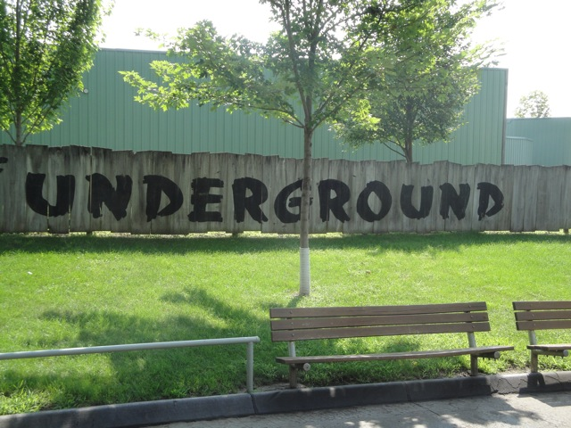
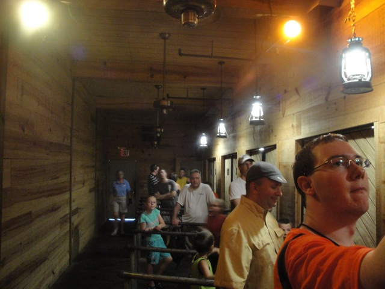

| |
Underground Review

We're here at Adventureland. Today's ride we'll be reviewing is called the Underground. This is a very strange roller coaster that's barely even a roller coaster. I mean, if I had to take one ride off my credit count, this would be it. It just screams "DARK RIDE!!!! I'M A F*CKING DARK RIDE!!!!" to me. However, credit or not, the Underground is a very fun as well as strange ride. First you head into a preshow room, where you hear an old man anamatronic tell you the story of the Underground. The doors then open and you get in the train. We then go through a couple turns in the dark. From what I've heard and seen from an old POV, there used to be flickering lanterns here, but at least I still saw the mist in here today. Which is cool. We then pass by a man pulling his donkey trying to get him to do work. We go through a turn in the dark before we meet back with that man, who is now pulling his donkey with some rope around his snout. After a few more turns, we then see a light. We go up a lifthill as we climb towards the light (This is the first time it even semi-feels like a roller coaster). We then go through some turns in the dark and pass by an old man looking out his window with his lamp. After a few more turns in the dark, we come across a bridge going over a waterfall. This is where we encounter our first drop. And it's not even really a drop at all. It's about the size of the typical predip on a B&M. And I even think that's giving this drop too much credit. We then climb up another lifthill with some rock theming before going through more turns and looking at more theming. You then go through more turns and even see some skeletons before going into the station. And yeah. This is barely a coaster. Oh, and I don't just mean cutting it close, I mean begging on your knees for mercy, just a nanometer away from dark ride, cutting it close. I don't even know why I count it! I should uncount it! I should do it right now! Nah, I'm too lazy to do so. That would involve me having to change all my coaster count lists, change my milestones and refigure all that out. And....I just don't have time for that. I'm too busy with life. You hear that Underground!!? You're LITERALLY only a credit due to poor early judgement, laziness, and a busy schedule! NOT THROUGH ANY OTHER MEANS!!! CAUSE THAT'D MAKE YOU A F*CKING DARK RIDE!!! Either way, it's still a fun ride and really helps make Adventureland Adventureland.
4/10
Location: Adventureland
Opened: 1996
Built by: Custom Coasters International
Last Ridden: August 6, 2010
Underground Photos

Home
|